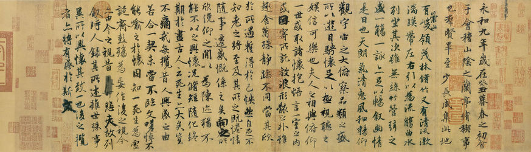
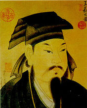
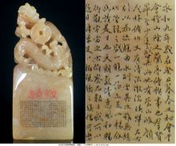

兰亭序，又名《兰亭集序》、《兰亭宴集序》、《临河序》、《禊序》、《禊帖》。晋代书法家，会稽内史王羲之撰写。其文书法具有极高的艺术价值和历史地位，为历代书法名家力公认天下第一行书。
东晋穆帝永和九年（公元353年）三月初三，王羲之与谢安、孙绰等四十一人，在山阴城（今浙江绍兴）的兰亭修禊(xì)，各有诗，辑为《兰亭集》，王羲之为之书写序文手稿，曰《兰亭集序》。序中记叙兰亭周围山水之美和聚会的欢乐之情，抒发作者好景不长，生死无常的感慨。法帖相传之本，共二十八行，三百二十四字，章法、结构、笔法都很完美，是他五十岁时的得意之作。后人评道“右军字体，古法一变。其雄秀之气，出于天然，故古今以为师法”。因此，历代书家都推《兰亭序》为“天下第一行书”。存世唐摹墨迹以“神龙本”为最著，唐太宗时冯承素号金印，故称为《兰亭神龙本》，此本摹写精细，笔法、墨气、行款、神韵，都得以体现，公认为是最好的摹本；石刻首推“定武本”。经郭沫若考证，以为相传的《兰亭序》后半文字，兴感无端，与王羲之思想无相同之处，书体亦和近年出土的东晋王氏墓志不类，疑为隋唐人所伪托。但也有不同意其说者。《兰亭序》表现了王羲之书法艺术的最高境界。作者的气度、凤神、襟怀、情愫，在这件作品中得到了充分表现。古人称王羲之的行草如“清风出袖，明月入怀”，堪称绝妙的比喻。世人也常用曹植的《洛神赋》中：“翩若惊鸿，婉若游龙，荣曜秋菊，华茂春松。仿佛兮若轻云之蔽月，飘飖兮若流风之回雪。”一句来赞美王羲之的书法之美。传说王羲之小的时候苦练书法，日久，用于清洗毛笔的池塘水都变成墨色。
王羲之（303—361年），汉族，字逸少，号澹（dàn）斋，身长七尺有余（约1.83米），原籍琅琊临沂（今属山东），后迁居会稽郡山阴县（今浙江绍兴），官至右军将军，会稽内史，是东晋伟大的书法家，被后人尊为“书圣”。他的儿子王献之书法也很好,人们称他们两人为"二王",另一个儿子王凝之官至左将军。因曾任右军将军，世称“王右军”、“王会稽”。代表作品有：楷书《乐毅论》、《黄庭经》、草书《十七帖》、行书《姨母帖》、《快雪时晴帖》、《丧乱帖》、行楷《兰亭集序》等。精研体势，心摹手追，广采众长，冶于一炉，创造出“天质自然，丰神盖代”的行书，被后人誉为“书圣”。其中，王羲之书写的《兰亭集序》为书家所敬仰，被称作“天下第一行书”。王羲之对真书、草、行主体书法造诣都很深。今人刘铎对王羲之的书法曾称赞道：“好字唯之（之，即王羲之）”。
兰亭集序： 永和九年，岁在癸（guǐ）丑，暮春之初，会于会稽（kuài jī）山阴之兰亭，修禊（xì）事也。群贤毕至，少长咸集。此地有崇山峻岭，茂林修竹， 又有清流激湍（tuān），映带左右。引以为流觞（shāng）曲（ qū）水，列坐其次，虽无丝竹管弦之盛，一觞（shang)一咏，亦足以畅叙幽情。 是日也，天朗气清，惠风和畅。仰观宇宙之大，俯察品类之盛，所以游目骋（chěng）怀，足以极视听之娱，信可乐也。 夫人之相与，俯仰一世。或取诸怀抱，悟言一室之内；或因寄所托，放浪形骸（hái）之外。虽趣（qǔ）舍万殊，静躁不同，当其欣于所遇，暂得于己，怏（同“快”）然自足，不知老之将至。及其所之既倦，情随事迁，感慨系（xì）之矣。向之所欣，俯仰之间，已为陈迹，犹不能不以之兴怀。况修短随化，终期于尽。古人云：“死生亦大矣。”岂不痛哉！ 每览昔人兴感之由，若合一契，未尝不临文嗟（jiē）悼，不能喻之于怀。固知一死生为虚诞，齐彭殇(shāng)为妄作。后之视今，亦犹今之视昔，悲夫！故列叙时人，录其所述。虽世殊事异，所以兴怀，其致一也。后之览者，亦将有感于斯文。
写兰亭集会的盛况以突出生之“乐” 。 文章的第一段较具体地写了兰亭集会的盛况。本段共六句。第一句交代了集会的时间、地点及目的，第二句交代了与会的人物，第三句写了兰亭之优雅的环境，第四句写盛会上人们的活动情况，第五句写晴和的天气，第六句抒发感慨。显然，六句中，有些是惯常的必要的交代，有些是写自然造化之美，有些却是写集会的“盛况”。贵族高官们在晴朗的天空下，感受着和煦的春风，可远眺可近观可仰视可俯察，流觞曲水，饮酒赋诗，畅叙幽情，何其痛哉!快哉!乐哉!而“仰观宇宙之大，俯察品类之盛”，其作用在于“游目骋怀”“极视听之娱”。这里在抒发了生之快乐的同时，又表现出一种旷达的心境。 本段以写盛会始，以抒感慨终；以做“修禊”为名，以行快乐为实。 写静者躁者的异同以突出死之“痛” 。 文章的第二段写了两种人，一个是喜欢“静”的人，一个是喜欢“躁”的人。前者“取诸怀抱，悟言一室之内”，后者“因寄所托，放浪形骸之外”，性格乃至行为上有很大的不同。但是，两者又有惊人的相似之处：“当其欣于所遇，暂得于己，快然自足，曾不知老之将至；及其所之既倦，情随事迁，感慨系之矣。”快乐的时候，得意忘形，感觉不到自己在悄悄地衰老，等对高兴的事物感到了厌倦，感慨就自然而然地产生了。什么感慨?有两个：一个是“向之所欣，俯仰之间，已为陈述”；另一个是“修短随化，终期于尽”。它告诉我们三点：其一，事物有生就有灭，有乐就有悲；其二，事物由生到灭，由乐到悲，其时间很短暂，倏忽之间，正如白驹之过隙；其三，生命之长短之存灭，不是主观所能左右的，它取决于自然的造化。由此说来，生命是何其宝贵!正因如此，所以作者才引用古训“死生亦大矣”；正因如此，所以作者慨叹：“岂不痛哉!” 文章为批评名士之虚无的思想观念而作 。 东晋是名士风流的时代。他们崇尚老庄，大谈玄理，不务实际，思想虚无，寄情山水，笑傲山野。他们思想消极，行动无为，就像浮萍之于海水，随波荡漾，飘到哪里就是哪里。当然，死了就死了，无所谓，因为死就是生，生就是死，“一死生”“齐彭殇”。对此，作者作了委婉的批评。 生和死是两码事，不能等同起来。生有各种各样的生，有的人活得窝窝囊囊，有的人活得志得意足；死也有各种各样的死，有的人死得默默无闻，有的人死得轰轰烈烈。司马迁说：“人固有一死，或重于泰山，或轻于鸿毛。”臧克家说：“有的人死了，他还活着；有的人活着，他已经死了。”毛泽东说：“生的伟大，死的光荣。”。。。。。。生与死怎么可以等同呢?正如作者所说的：“固知一死生为虚诞，齐彭殇为妄作。”作者这样写，表明了他对生死问题的看重，他是想以此来启发那些思想糊涂的所谓名士，不要让生命轻易地从自己的身边悄悄逝去。 文章以“死生亦大矣”的观点来警醒“后之览者” 。 综上所述，文章记叙了兰亭集会的盛况，阐述了“死生亦大矣”的观点，批评了士大夫之虚无的思想观念，显然是有感而作，缘情而发。但是，作为一篇文集的“序”，除了批评士大夫之虚无的思想观念之外，还要对结集的目的说一说。参加兰亭集会的是当时社会上的名流，如谢安、孙绰等人。正如上文所说，他们引觞曲水，饮酒赋诗，畅叙幽情，何其痛哉!快哉!乐哉!然而，“向其所欣，俯仰之间，已为陈迹”。对此，作者认为“岂不痛哉”!所以，把他们赋的诗收录下来，不至于使其泯灭，而让其流芳百世，使“后之览者，亦将有感于斯文”，如作者一般，生发出“死生亦大矣”的感慨。为什么会这样呢?因为“虽世殊事异，所以兴怀，其致一也”，因为“后之视今，亦由今之视昔”。这不能不令人慨叹作者有一副多么好的心肠!
齐白石 山水十二条屏
齐白石（1864年1月1日─1957年9月16日），祖籍安徽宿州砀山，生于湖南长沙府湘潭（今湖南湘潭）。原名纯芝，字渭青，号兰亭。后改名璜，字濒生，号白石、白石山翁、老萍、饿叟、借山吟馆主者、寄萍堂上老人、三百石印富翁。是近现代中国绘画大师，世界文化名人。早年曾为木工，后以卖画为生，五十七岁后定居北京。擅画花鸟、虫鱼、山水、人物，笔墨雄浑滋润，色彩浓艳明快，造型简练生动，意境淳厚朴实。所作鱼虾虫蟹，天趣横生。
齐白石书工篆隶，取法于秦汉碑版，行书饶古拙之趣，篆刻自成一家，善写诗文。曾任中央美术学院名誉教授、中国美术家协会主席等职。代表作有《蛙声十里出山泉》《墨虾》等。著有《白石诗草》《白石老人自述》等。
浓厚的乡土气息，纯朴的农民意识和天真浪漫的童心，富有余味的诗意，是齐白石艺术的内在生命，而那热烈明快的色彩，墨与色的强烈对比，浑朴稚拙的造型和笔法，工与写的极端合成，平正见奇的构成，作为齐白石独特的艺术语言和视觉形状，相对而言则是齐白石艺术的外在生命。现实的情感要求与之相适应的形式，而这形式又强化了情感的表现，两者相互需求、相互生发、相互依存，共同构成了齐白石的艺术生命，即齐白石艺术的总体风格。
齐白石主张艺术“妙在似与不似之间”，衰年变法，形成独特的大写意国画风格，开红花墨叶一派，尤以瓜果菜蔬花鸟虫鱼为工绝，兼及人物、山水，名重一时，与吴昌硕共享“南吴北齐”之誉；以齐白石纯朴的民间艺术风格与传统的文人画风相融合，达到了中国现代花鸟画最高峰。篆刻初学丁敬、黄小松，后仿赵撝叔，并取法汉印；见《祀三公山碑》、《天发神谶碑》，篆法一变再变，印风雄奇恣肆，为近现代印风嬗变期代表人物。其书法广临碑帖，历宗何绍基、李北海、金冬心、郑板桥诸家，尤以篆、行书见长。诗不求工，无意唐宋，师法自然，书写性灵，别具一格。其画印书诗人称四绝。一生勤奋，砚耕不辍，自食其力，品行高洁，尤具民族气节。留下画作三万余幅、诗词三千余首、自述及齐白石文稿并手迹多卷。齐白石的作品以多种形式一再印制行世。
齐白石在绘画艺术上受陈师曾影响甚大，齐白石同时吸取吴昌硕之长。齐白石专长花鸟，笔酣墨饱，力健有锋。但画虫则一丝不苟，极为精细。齐白石还推崇徐渭、朱耷、石涛、金农。尤工虾蟹、蝉、蝶、鱼、鸟、水墨淋漓，洋溢着自然界生气勃勃的气息。山水构图奇异不落旧蹊，极富创造精神，篆刻独出手眼，书法卓然不群，蔚为大家。齐白石的画，反对不切实际的空想，齐白石经常注意花、鸟、虫、鱼的特点，揣摩它们的精神。齐白石曾说：为万虫写照，为百鸟张神，要自己画出自己的面目。齐白石的题句非常诙谐巧妙，齐白石画的两只小鸡争夺一条小虫，题曰；“齐白石日相呼”。一幅《棉花图》题曰：“花开天下暖，花落天下寒”。《不倒翁图》题“秋扇摇摇两面白，官袍楚楚通身黑。”
齐白石作品齐白石画虾堪称画坛一绝。齐白石画虾通过毕生的观察,力求深入表现虾的形神特征。齐白石从小生活在水塘边，常钓虾玩；青年时开始画虾；40岁后临摹过徐渭、李复堂等明清画家画的虾；63岁时齐白石画虾已很相似，但还不够“活”，便在碗里养了几只长臂虾，置于画案，每日观察，画虾之法也因此而变，虾成为齐白石代表性的艺术符号之一。
齐白石画虾已入化境，在简括的笔墨中表现了游弋水中的群虾。粗壮、浓厚的茨菇，与群虾的透明、轻灵纤细形成对比，体现出晚年的齐白石画艺的成熟。
齐白石作品
齐白石作品
齐白石作品
齐白石作品
齐白石作品